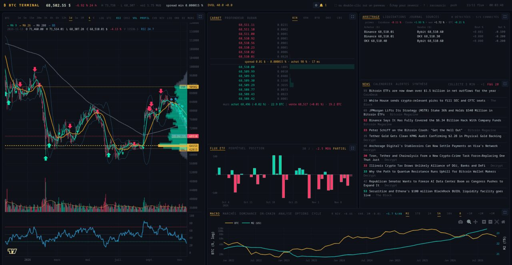

BTC Terminal
A Bloomberg-style terminal for Bitcoin, served by your own machine to your browser. Twenty-two synchronized panels — price chart and indicators, the order books of five exchanges, arbitrage, liquidations, spot ETF flows, futures and options, news, the macro calendar, on-chain data — under alerts you set yourself. It reads public market data only: no API key, no account, and it never places an order.
Un terminal à la Bloomberg pour le bitcoin, servi par votre propre machine à votre navigateur. Vingt-deux panneaux synchronisés — graphique du cours et indicateurs, carnets d’ordres de cinq plateformes, arbitrage, liquidations, flux des ETF spot, contrats à terme et options, news, calendrier macro, données de la chaîne — sous des alertes que vous réglez vous-même. Il ne lit que des données de marché publiques : aucune clé d’API, aucun compte, et jamais un ordre passé.
ស្ថានីយបែប Bloomberg សម្រាប់ Bitcoin ដែលដំណើរការលើម៉ាស៊ីនរបស់អ្នកផ្ទាល់ ហើយបង្ហាញក្នុង browser របស់អ្នក។ ផ្ទាំងចំនួន 22 ដែលធ្វើសមកាលកម្មជាមួយគ្នា — ក្រាហ្វតម្លៃ និង indicators, order books ពី exchange ចំនួន 5, arbitrage, liquidations, លំហូរ ETF spot, futures និង options, ព័ត៌មាន, ប្រតិទិន macro, ទិន្នន័យ on-chain — ព្រមទាំង alerts ដែលអ្នកកំណត់ដោយខ្លួនឯង។ វាអានតែទិន្នន័យទីផ្សារសាធារណៈប៉ុណ្ណោះ៖ មិនត្រូវការ API key មិនត្រូវការគណនី ហើយមិនដែលដាក់ order ណាមួយឡើយ។

The whole market on one screen.
Reading the Bitcoin market means watching many things at once: the chart, the order books of several exchanges, the gaps between their prices, the positions being forced shut, the money going in and out of spot ETFs, the futures and options markets, the news and the macro calendar. BTC Terminal puts all of it on one screen, as a grid of six cells. A cell can hold several panels behind tabs, any panel opens full screen with one click, and the layout is yours to arrange.
It is a local web application written in Python: you start it on your computer, or on a server you reach through an SSH tunnel, and open it in the browser. Run as a background service, it keeps its journal and its alerts going with no browser open. All its data comes from public sources: Binance, Kraken, Coinbase, Bybit and OKX for the order books, Deribit for options, and others for ETF flows, news, macro and on-chain data. It needs no API key and no account.
BTC Terminal displays market data; it does not tell you what to do. It places no orders, and where it draws levels or ranges it says what they are: key levels are prices where orders usually gather, not guarantees of a bounce, and the move implied by options is a reading of priced risk, not a forecast.
A static demo of the price panel runs in the browser on a frozen snapshot of a thousand candles per interval. Zoom, crosshair, the $/€ switch, log scale, RSI panes and the volume profile all work there, but nothing in it is live.
What it shows.
| Panels | What you see |
|---|---|
| Price | Candles from one minute to one month, with the time left before the candle closes. Moving averages 9/26/200, Bollinger bands, volume profile, signals, key levels (previous day, week and month; levels from options) and anchored VWAP. Optional panes and layers: RSI, CVD, volume, open interest, large-trade bubbles, an order-book heat map, a liquidation map. $/€, log scale, local time or UTC. |
| Order book · Depth · Tape | The live book of the exchange you pick among five, 8 levels per side (20 full screen), with the spread and the buyers’ share; the cumulative depth of all five books overlaid; and the tape of large trades on Binance, Coinbase and Bybit spot, showing whether a buyer or a seller took the initiative. |
| Arbitrage · Liquidations | Price gaps between exchanges, net of taker fees, sorted by profitability, with the Coinbase premium and the Korean premium (Upbit) split into its won and bitcoin parts. Positions forcibly closed on Binance, Bybit and OKX from $10k, with the hour’s totals and its largest liquidation. |
| Perpetual · Options | Funding rate, open interest and long share on Binance, Bybit and OKX, and the crowd’s positioning against that of the largest accounts. Deribit options in five views: implied (DVOL) against realised volatility, term structure and skew, open interest by strike with max pain, market makers’ gamma exposure, and a history kept by the journal. |
| ETF flows · Macro · Markets | Daily net flows of the spot bitcoin ETFs, also in bitcoins against what miners issue. The price against US M2 money supply or the supply of stablecoins, with an adjustable lag and correlations. Bitcoin against the S&P 500, the Nasdaq, gold, the dollar and the 10-year yield. |
| Dominance · On-chain · Cycle | Market-cap shares and their trend. Hashrate and difficulty with hash ribbons, block pace, the next difficulty adjustment, mempool, fees and hashprice. Where bitcoin stands since the halving and since its peak: halving countdown, past cycles overlaid, Mayer multiple, drawdown, MVRV, Puell multiple. |
| News · Calendar · Summary | A feed from six RSS sources, each article scored from 0 to 100, with the Fear & Greed index. FOMC, CPI, NFP and PCE dates, large Deribit option expiries and the week’s US releases, with countdowns. The last 24 hours on one page, which can also be sent to a phone every morning. |
| Alerts · Journal · Sources | Alert rules and their settings; a replay of the last 24 hours (alerts, arbitrage episodes, liquidations, large trades); the state of every data feed, the age of its last fresh data and its last error. |
| Position · Analysis | A position you type in by hand: result, distance to the stop, size for a chosen risk — nothing leaves the browser and no account is involved. Trend, RSI, ATR and last signal from 15m to 1w; signals and simple rules compared with just holding, fees included; monthly returns; CSV export. |
A panel hidden behind a tab is not in the page: it costs nothing and fills in as soon as it is shown. The ⚙ button puts each panel in the cell of your choice, and every setting — interval, currency, tabs, layout — survives a reload.
Made to be left running.
Fast where it counts
The fast panels — order book, depth, arbitrage, liquidations — never touch the network: they read books that a single hub keeps in memory, with one connection per exchange for all panels. While the browser holds a WebSocket open, the server pushes the order book every 100 ms; if it drops, the page goes back to polling without breaking. That keeps the book alive over a distant SSH tunnel.
A chart to work on
The price chart is drawn in the browser with Lightweight Charts and keeps your zoom while data flows in. Shift + drag zooms on a box, Ctrl + drag measures a move, T draws a trend line, A anchors a VWAP on a candle, Alt + click sets a price alert. Keyboard shortcuts and a command line (/) drive the whole terminal.
Alerts, even on your phone
Rules for price thresholds, a 2 % move in fifteen minutes, liquidation bursts, extreme funding, high-scoring news, arbitrage gaps, a daily close across the 200-day average, options and on-chain events, and more. They ring when a condition starts, with a cooldown, so a flickering condition does not ring in bursts — and they can be pushed to a phone through ntfy, with a summary every morning.
A session you can replay
Liquidations, arbitrage episodes, large trades and alerts go into a local SQLite journal, kept 30 days. Market snapshots taken every five minutes are kept 400 days, which extends funding and open interest beyond the 30 days Binance serves. Closed candles are stored on disk, so the chart opens faster and survives an exchange outage.
When the DNS lies
Some internet providers — in Cambodia, for one — answer 127.0.0.1 for the exchanges’ hostnames, and the terminal would silently fall back to demo data. At start-up the hub asks a DNS-over-HTTPS resolver reached by IP address (1.1.1.1, then 8.8.8.8) for those names, and connects to the real addresses. Nothing to configure.
It says what it does not know
A Sources panel lists every feed — ok, fallback, down, silent or cut — with the age of its last fresh data and its last error. If Binance cannot be reached at start-up, the chart shows a locally generated demo series under an orange banner saying the figures are not real; an ETF day still being published is marked “partial”.
Some alert thresholds were set without much hindsight: those for thin order books and for the options skew are still provisional, waiting for a few weeks of journal data.
One command, one port.
It installs in a Python virtual environment and starts with one command. It listens on 127.0.0.1:8050 only, so from another computer you reach it through an SSH tunnel. For round-the-clock use, a systemd user unit template serves it through gunicorn.
$ pip install -e . $ btcterm # or: python -m terminal.app → http://127.0.0.1:8050 $ ssh -L 8050:localhost:8050 <machine> # from another computer $ python -m btcterm.journal --heures 6 # replay the last six hours
Tout le marché sur un seul écran.
Lire le marché du bitcoin, c’est surveiller beaucoup de choses à la fois : le graphique, les carnets d’ordres de plusieurs plateformes, les écarts de prix entre elles, les positions fermées de force, l’argent qui entre dans les ETF spot et qui en sort, les marchés à terme et d’options, les news et le calendrier macro. BTC Terminal réunit tout cela sur un seul écran, en une grille de six cellules. Une cellule peut accueillir plusieurs panneaux derrière des onglets, chaque panneau passe en plein écran d’un clic, et la disposition se règle à votre guise.
C’est une application web locale écrite en Python : on la lance sur son ordinateur, ou sur un serveur joint par tunnel SSH, et on l’ouvre dans le navigateur. Lancée comme service en arrière-plan, elle tient son journal et ses alertes sans navigateur ouvert. Toutes ses données viennent de sources publiques : Binance, Kraken, Coinbase, Bybit et OKX pour les carnets, Deribit pour les options, et d’autres pour les flux ETF, les news, la macro et la chaîne. Il ne faut ni clé d’API ni compte.
BTC Terminal affiche des données de marché ; il ne dit pas quoi faire. Il ne passe aucun ordre, et là où il trace des niveaux ou des fourchettes, il dit ce qu’ils sont : les niveaux clés sont des prix où les ordres s’accumulent d’ordinaire, pas des garanties de rebond, et le mouvement qu’impliquent les options est une lecture du risque payé, pas une prévision.
Une démo statique du panneau prix tourne dans le navigateur, sur un instantané figé de mille bougies par intervalle. Zoom, crosshair, bascule $/€, échelle log, panes RSI et profil de volume y fonctionnent, mais rien n’y est en direct.
Ce qu’il affiche.
| Panneaux | Ce qu’on y voit |
|---|---|
| Prix | Des chandeliers d’une minute à un mois, avec le temps restant avant la clôture de la bougie. Moyennes mobiles 9/26/200, bandes de Bollinger, profil de volume, signaux, niveaux clés (veille, semaine et mois passés ; niveaux des options) et VWAP ancré. Panes et couches en option : RSI, CVD, volume, open interest, bulles des gros ordres, carte de chaleur du carnet, carte des liquidations. $/€, échelle log, heure locale ou UTC. |
| Carnet · Profondeur · Ruban | Le carnet en direct de la plateforme choisie parmi cinq, 8 niveaux par côté (20 en plein écran), avec le spread et la part des acheteurs ; la profondeur cumulée des cinq carnets superposés ; et le ruban des gros ordres exécutés sur Binance, Coinbase et Bybit au comptant, qui dit si un acheteur ou un vendeur a pris l’initiative. |
| Arbitrage · Liquidations | Les écarts de prix entre plateformes, nets des frais taker, triés par rentabilité, avec la prime Coinbase et la prime coréenne (Upbit) décomposée en won et en bitcoin. Les positions fermées de force sur Binance, Bybit et OKX à partir de 10 k$, avec les totaux de l’heure et sa plus grosse liquidation. |
| Perpétuel · Options | Financement, open interest et part des longs sur Binance, Bybit et OKX, et le positionnement de la foule face à celui des plus gros comptes. Les options Deribit en cinq vues : volatilité implicite (DVOL) contre réalisée, structure par échéance et skew, open interest par strike avec le max pain, exposition gamma des teneurs de marché, et un historique tenu par le journal. |
| Flux ETF · Macro · Marchés | Les flux nets quotidiens des ETF bitcoin spot, aussi en bitcoins face à l’émission des mineurs. Le cours face à la masse monétaire M2 américaine ou à l’offre de stablecoins, avec un décalage réglable et des corrélations. Le bitcoin face au S&P 500, au Nasdaq, à l’or, au dollar et au taux à dix ans. |
| Dominance · On-chain · Cycle | Les parts de capitalisation et leur tendance. Hashrate et difficulté avec les hash ribbons, rythme des blocs, prochain ajustement de difficulté, mempool, frais et hashprice. Où en est le bitcoin depuis le halving et depuis son sommet : compte à rebours du prochain halving, cycles superposés, multiple de Mayer, repli, MVRV, multiple de Puell. |
| News · Calendrier · Synthèse | Un fil tiré de six flux RSS, chaque article noté de 0 à 100, avec l’indice Fear & Greed. Les dates du FOMC, du CPI, du NFP et du PCE, les grosses échéances d’options Deribit et les publications américaines de la semaine, avec compte à rebours. Les dernières 24 h en une page, qui peut aussi partir chaque matin vers un téléphone. |
| Alertes · Journal · Sources | Les règles d’alerte et leurs réglages ; la relecture des dernières 24 h (alertes, épisodes d’arbitrage, liquidations, gros ordres) ; l’état de chaque source de données, l’âge de sa dernière donnée fraîche et sa dernière erreur. |
| Position · Analyse | Une position saisie à la main : résultat, distance au stop, taille pour un risque choisi — rien ne quitte le navigateur, aucun compte n’est en jeu. Tendance, RSI, ATR et dernier signal de 15m à 1w ; signaux et règles simples confrontés à la simple détention, frais compris ; rendements mensuels ; export CSV. |
Un panneau caché derrière un onglet n’est pas dans la page : il ne coûte rien et se remplit dès qu’on l’affiche. Le bouton ⚙ range chaque panneau dans la cellule de votre choix, et tous les réglages — intervalle, devise, onglets, disposition — survivent au rechargement.
Fait pour tourner en continu.
Rapide là où ça compte
Les panneaux rapides — carnet, profondeur, arbitrage, liquidations — ne touchent jamais le réseau : ils lisent les carnets qu’un hub unique tient en mémoire, avec une seule connexion par plateforme pour tous les panneaux. Tant que le navigateur tient un WebSocket ouvert, le serveur pousse le carnet toutes les 100 ms ; si la connexion tombe, la page repasse à l’interrogation sans rien casser. C’est ce qui garde le carnet vif sur un tunnel SSH lointain.
Un graphique pour travailler
Le cours est dessiné dans le navigateur avec Lightweight Charts et garde votre zoom pendant que les données arrivent. Maj + glisser zoome sur un cadre, Ctrl + glisser mesure un mouvement, T trace une ligne de tendance, A ancre un VWAP sur une bougie, Alt + clic pose une alerte de cours. Raccourcis clavier et ligne de commande (/) conduisent tout le terminal.
Des alertes jusqu’au téléphone
Des règles pour les seuils de cours, un mouvement de 2 % en quinze minutes, les rafales de liquidations, un financement extrême, les news à fort score, les écarts d’arbitrage, une clôture journalière de part et d’autre de la moyenne de 200 jours, des événements d’options et de chaîne, et d’autres encore. Elles sonnent quand une condition apparaît, sous délai de garde — une condition qui clignote ne sonne pas en rafale —, et peuvent partir vers un téléphone par ntfy, avec une synthèse chaque matin.
Une séance qui se relit
Liquidations, épisodes d’arbitrage, gros ordres et alertes vont dans un journal SQLite local, gardé 30 jours. Les instantanés de marché, pris toutes les cinq minutes, sont gardés 400 jours, ce qui prolonge financement et open interest au-delà des 30 jours que sert Binance. Les bougies closes sont gardées sur disque : le graphique s’ouvre plus vite et survit à une panne de la plateforme.
Quand le DNS ment
Certains fournisseurs d’accès — au Cambodge, par exemple — répondent 127.0.0.1 pour les noms des plateformes, et le terminal retomberait sans bruit sur des données de démonstration. Au démarrage, le hub demande ces noms à un résolveur DNS sur HTTPS joint par son adresse IP (1.1.1.1, puis 8.8.8.8), et se connecte aux vraies adresses. Rien à configurer.
Il dit ce qu’il ne sait pas
Un panneau Sources liste chaque flux — ok, secours, panne, muet ou coupé — avec l’âge de sa dernière donnée fraîche et sa dernière erreur. Si Binance est injoignable au démarrage, le graphique affiche une série de démonstration générée localement sous un bandeau orange qui dit que les chiffres ne sont pas réels ; un jour de flux ETF encore en cours de publication est marqué « partiel ».
Certains seuils d’alerte ont été posés sans grand recul : ceux des carnets creux et du skew des options restent provisoires, en attendant quelques semaines de journal.
Une commande, un port.
Il s’installe dans un environnement virtuel Python et se lance d’une commande. Il n’écoute que sur 127.0.0.1:8050 : depuis un autre ordinateur, on y accède par un tunnel SSH. Pour un usage en continu, un gabarit d’unité systemd utilisateur le sert par gunicorn.
$ pip install -e . $ btcterm # ou : python -m terminal.app → http://127.0.0.1:8050 $ ssh -L 8050:localhost:8050 <machine> # depuis un autre ordinateur $ python -m btcterm.journal --heures 6 # relire les six dernières heures
ទីផ្សារទាំងមូលនៅលើអេក្រង់តែមួយ។
ការអានទីផ្សារ Bitcoin មានន័យថាត្រូវតាមដានរឿងច្រើនក្នុងពេលតែមួយ៖ ក្រាហ្វតម្លៃ order books របស់ exchange ជាច្រើន គម្លាតតម្លៃរវាង exchange ទាំងនោះ positions ដែលត្រូវបានបិទដោយបង្ខំ ប្រាក់ដែលហូរចូល និងហូរចេញពី ETF spot ទីផ្សារ futures និង options ព័ត៌មាន និងប្រតិទិន macro។ BTC Terminal ដាក់អ្វីៗទាំងអស់នេះនៅលើអេក្រង់តែមួយ ជាក្រឡាចត្រង្គដែលមានប្រអប់ 6។ ប្រអប់មួយអាចផ្ទុកផ្ទាំងច្រើនតាមរយៈ tabs ផ្ទាំងណាមួយក៏អាចបើកពេញអេក្រង់ដោយចុចតែម្តង ហើយអ្នកអាចរៀបចំប្លង់តាមចិត្ត។
វាជាកម្មវិធី web ក្នុងម៉ាស៊ីន (local) ដែលសរសេរដោយ Python៖ អ្នកបើកវានៅលើកុំព្យូទ័ររបស់អ្នក ឬនៅលើ server ដែលអ្នកចូលតាម SSH tunnel ហើយមើលវាក្នុង browser។ នៅពេលដំណើរការជា service នៅផ្ទៃខាងក្រោយ វានៅតែកត់ត្រាកំណត់ហេតុ (journal) និងតាមដាន alerts ទោះបីគ្មាន browser បើកក៏ដោយ។ ទិន្នន័យទាំងអស់មកពីប្រភពសាធារណៈ៖ Binance, Kraken, Coinbase, Bybit និង OKX សម្រាប់ order books, Deribit សម្រាប់ options និងប្រភពផ្សេងទៀតសម្រាប់លំហូរ ETF ព័ត៌មាន macro និងទិន្នន័យ on-chain។ វាមិនត្រូវការ API key ឬគណនីណាមួយទេ។
BTC Terminal បង្ហាញទិន្នន័យទីផ្សារ ប៉ុន្តែវាមិនប្រាប់អ្នកថាត្រូវធ្វើអ្វីនោះទេ។ វាមិនដាក់ order ណាមួយឡើយ ហើយនៅកន្លែងដែលវាគូសកម្រិត ឬចន្លោះតម្លៃ វាប្រាប់យ៉ាងច្បាស់ថាវាជាអ្វី៖ key levels គឺជាតម្លៃដែល orders ច្រើនតែប្រមូលផ្តុំ មិនមែនជាការធានាថាតម្លៃនឹងងើបឡើងវិញទេ ហើយចលនាតម្លៃដែល options បង្ហាញ គឺជាការអានហានិភ័យដែលទីផ្សារបានបង់ថ្លៃ មិនមែនជាការព្យាករណ៍ទេ។
demo ឋិតិវន្ត (static) នៃផ្ទាំងតម្លៃ ដំណើរការក្នុង browser ដោយប្រើទិន្នន័យដែលបានថតទុក (snapshot) ចំនួន 1000 candles សម្រាប់ interval នីមួយៗ។ zoom, crosshair, ការប្តូរ $/€, log scale, RSI panes និង volume profile ទាំងអស់ដំណើរការនៅទីនោះ ប៉ុន្តែគ្មានអ្វីនៅក្នុងនោះជាទិន្នន័យផ្ទាល់ (live) ទេ។
អ្វីដែលវាបង្ហាញ។
| ផ្ទាំង | អ្វីដែលអ្នកឃើញ |
|---|---|
| ក្រាហ្វតម្លៃ | candles ពី 1 នាទីដល់ 1 ខែ ជាមួយពេលវេលាដែលនៅសល់មុនពេល candle បិទ។ moving averages 9/26/200, Bollinger bands, volume profile, signals, key levels (ថ្ងៃមុន សប្តាហ៍មុន ខែមុន និងកម្រិតពី options) និង anchored VWAP។ panes និង layers ជាជម្រើស៖ RSI, CVD, volume, open interest, ពពុះនៃ orders ធំៗ, heat map នៃ order book និងផែនទី liquidations។ $/€, log scale, ម៉ោងក្នុងស្រុក ឬ UTC។ |
| Order book · Depth · Tape | order book ផ្ទាល់នៃ exchange ដែលអ្នកជ្រើសក្នុងចំណោម 5, 8 កម្រិតម្ខាង (20 ពេលពេញអេក្រង់) ជាមួយ spread និងចំណែករបស់អ្នកទិញ។ depth សរុបនៃ books ទាំង 5 ដាក់ត្រួតលើគ្នា។ និង tape នៃការជួញដូរធំៗលើ Binance, Coinbase និង Bybit spot ដែលបង្ហាញថាអ្នកទិញ ឬអ្នកលក់ជាអ្នកផ្តួចផ្តើម។ |
| Arbitrage · Liquidations | គម្លាតតម្លៃរវាង exchanges ក្រោយកាត់ taker fees ចេញ តម្រៀបតាមប្រាក់ចំណេញ ជាមួយ Coinbase premium និង premium កូរ៉េ (Upbit) ដែលបំបែកជាផ្នែកប្រាក់វ៉ុន និងផ្នែក bitcoin។ positions ដែលត្រូវបានបិទដោយបង្ខំលើ Binance, Bybit និង OKX ចាប់ពី 10 k$ ឡើងទៅ ជាមួយចំនួនសរុបក្នុងម៉ោងនោះ និង liquidation ធំបំផុតនៃម៉ោងនោះ។ |
| Perpetual · Options | funding rate, open interest និងចំណែក long លើ Binance, Bybit និង OKX ព្រមទាំងការប្រៀបធៀបទីតាំងរបស់អ្នកជួញដូរទូទៅ ជាមួយគណនីធំៗ។ options របស់ Deribit ក្នុង 5 ទិដ្ឋភាព៖ volatility implied (DVOL) ធៀបនឹង realised, term structure និង skew, open interest តាម strike ជាមួយ max pain, gamma exposure របស់ market makers និងប្រវត្តិដែលកំណត់ហេតុរក្សាទុក។ |
| លំហូរ ETF · Macro · ទីផ្សារ | លំហូរសុទ្ធប្រចាំថ្ងៃនៃ ETF bitcoin spot ដែលបង្ហាញជា bitcoin ធៀបនឹងចំនួនដែល miners ផលិតថ្មីផងដែរ។ តម្លៃធៀបនឹងរូបិយវត្ថុ M2 របស់សហរដ្ឋអាមេរិក ឬបរិមាណ stablecoins ជាមួយការពន្យារពេលដែលអាចកែបាន និង correlations។ Bitcoin ធៀបនឹង S&P 500, Nasdaq, មាស, ប្រាក់ដុល្លារ និងអត្រាការប្រាក់ 10 ឆ្នាំ។ |
| Dominance · On-chain · វដ្ត | ចំណែក market cap និងនិន្នាការរបស់វា។ hashrate និង difficulty ជាមួយ hash ribbons, ល្បឿននៃ blocks, ការកែតម្រូវ difficulty បន្ទាប់, mempool, ថ្លៃប្រតិបត្តិការ និង hashprice។ ទីតាំងរបស់ bitcoin ចាប់តាំងពី halving និងចាប់តាំងពីកំពូល៖ ការរាប់ថយក្រោយទៅ halving បន្ទាប់, វដ្តមុនៗដាក់ត្រួតគ្នា, Mayer multiple, ការធ្លាក់ពីកំពូល, MVRV និង Puell multiple។ |
| ព័ត៌មាន · ប្រតិទិន · សេចក្តីសង្ខេប | ព័ត៌មានពីប្រភព RSS ចំនួន 6 ដែលអត្ថបទនីមួយៗមានពិន្ទុពី 0 ដល់ 100 ជាមួយសន្ទស្សន៍ Fear & Greed។ កាលបរិច្ឆេទ FOMC, CPI, NFP និង PCE, ថ្ងៃផុតកំណត់ options ធំៗរបស់ Deribit និងការចេញផ្សាយទិន្នន័យអាមេរិកប្រចាំសប្តាហ៍ ជាមួយការរាប់ថយក្រោយ។ 24 ម៉ោងចុងក្រោយក្នុងទំព័រតែមួយ ដែលអាចផ្ញើទៅទូរស័ព្ទរៀងរាល់ព្រឹកបានផងដែរ។ |
| Alerts · កំណត់ហេតុ · Sources | ច្បាប់ alerts និងការកំណត់របស់វា។ ការមើលឡើងវិញនូវ 24 ម៉ោងចុងក្រោយ (alerts, ឱកាស arbitrage, liquidations, orders ធំៗ)។ ស្ថានភាពនៃប្រភពទិន្នន័យនីមួយៗ អាយុនៃទិន្នន័យថ្មីចុងក្រោយរបស់វា និងកំហុសចុងក្រោយ។ |
| Position · ការវិភាគ | position ដែលអ្នកវាយបញ្ចូលដោយដៃ៖ លទ្ធផល ចម្ងាយទៅ stop និងទំហំសម្រាប់កម្រិតហានិភ័យដែលបានជ្រើស — គ្មានអ្វីចេញពី browser ហើយមិនភ្ជាប់ជាមួយគណនីណាមួយទេ។ និន្នាការ RSI ATR និង signal ចុងក្រោយពី 15m ដល់ 1w, ការប្រៀបធៀប signals និងច្បាប់សាមញ្ញៗជាមួយការកាន់ទុកធម្មតា (រួមទាំងថ្លៃសេវា), ទិន្នផលប្រចាំខែ និង export CSV។ |
ផ្ទាំងដែលលាក់នៅពីក្រោយ tab មិនមាននៅក្នុងទំព័រទេ៖ វាមិនចំណាយធនធានអ្វីឡើយ ហើយវាបំពេញទិន្នន័យភ្លាមៗនៅពេលអ្នកបើកវា។ ប៊ូតុង ⚙ អនុញ្ញាតឱ្យដាក់ផ្ទាំងនីមួយៗទៅក្នុងប្រអប់ដែលអ្នកចង់បាន ហើយការកំណត់ទាំងអស់ — interval, រូបិយប័ណ្ណ, tabs, ប្លង់ — នៅតែរក្សាទុក បន្ទាប់ពីផ្ទុកទំព័រឡើងវិញ។
បង្កើតឡើងដើម្បីដំណើរការជាប់ជានិច្ច។
លឿននៅកន្លែងដែលសំខាន់
ផ្ទាំងលឿនៗ — order book, depth, arbitrage, liquidations — មិនដែលប្រើបណ្តាញដោយផ្ទាល់ទេ៖ វាអាន books ដែល hub តែមួយរក្សាទុកក្នុង memory ដោយបើកការតភ្ជាប់តែមួយក្នុងមួយ exchange សម្រាប់ផ្ទាំងទាំងអស់។ ខណៈដែល browser បើក WebSocket នោះ server បញ្ជូន (push) order book រៀងរាល់ 100 ms ហើយប្រសិនបើការតភ្ជាប់ដាច់ ទំព័រត្រឡប់ទៅប្រើ polling វិញដោយគ្មានអ្វីខូច។ នេះហើយដែលធ្វើឱ្យ order book នៅតែរស់រវើក សូម្បីតែតាម SSH tunnel ពីចម្ងាយ។
ក្រាហ្វសម្រាប់ធ្វើការ
ក្រាហ្វតម្លៃត្រូវបានគូរក្នុង browser ដោយ Lightweight Charts ហើយ zoom របស់អ្នកនៅដដែល ខណៈទិន្នន័យថ្មីកំពុងហូរចូល។ Shift + អូស ដើម្បី zoom លើតំបន់មួយ, Ctrl + អូស ដើម្បីវាស់ចលនាតម្លៃ, T ដើម្បីគូរបន្ទាត់និន្នាការ, A ដើម្បីដាក់ anchored VWAP លើ candle មួយ និង Alt + ចុច ដើម្បីដាក់ alert តម្លៃ។ shortcuts ក្តារចុច និងបន្ទាត់ពាក្យបញ្ជា (/) អាចបញ្ជាស្ថានីយទាំងមូលបាន។
Alerts រហូតដល់ទូរស័ព្ទ
មានច្បាប់សម្រាប់កម្រិតតម្លៃ, ចលនា 2 % ក្នុង 15 នាទី, liquidations ច្រើនក្នុងពេលខ្លី, funding ខ្លាំងពេក, ព័ត៌មានពិន្ទុខ្ពស់, គម្លាត arbitrage, តម្លៃបិទប្រចាំថ្ងៃដែលឆ្លងកាត់មធ្យមភាគ 200 ថ្ងៃ, ព្រឹត្តិការណ៍ options និង on-chain និងច្រើនទៀត។ វារោទិ៍នៅពេលលក្ខខណ្ឌមួយទើបតែកើតឡើង ហើយមានរយៈពេលរង់ចាំ ដូច្នេះលក្ខខណ្ឌដែលភ្លឹបភ្លែតមិនរោទិ៍ជាបន្តបន្ទាប់ទេ — ហើយ alerts អាចផ្ញើទៅទូរស័ព្ទតាម ntfy រួមជាមួយសេចក្តីសង្ខេបរៀងរាល់ព្រឹក។
វគ្គដែលអាចមើលឡើងវិញបាន
liquidations, ឱកាស arbitrage, orders ធំៗ និង alerts ត្រូវបានកត់ត្រាក្នុងកំណត់ហេតុ SQLite ក្នុងម៉ាស៊ីន ហើយរក្សាទុក 30 ថ្ងៃ។ ទិន្នន័យទីផ្សារដែលថតរៀងរាល់ 5 នាទី ត្រូវរក្សាទុក 400 ថ្ងៃ ដែលពង្រីកប្រវត្តិ funding និង open interest លើសពី 30 ថ្ងៃដែល Binance ផ្តល់ឱ្យ។ candles ដែលបិទរួចត្រូវរក្សាទុកលើ disk ដូច្នេះក្រាហ្វបើកលឿនជាងមុន ហើយនៅតែដំណើរការនៅពេល exchange មានបញ្ហា។
នៅពេល DNS កុហក
អ្នកផ្តល់សេវាអ៊ីនធឺណិតខ្លះ — ឧទាហរណ៍នៅកម្ពុជា — ឆ្លើយតបនឹងឈ្មោះ host របស់ exchanges ដោយ 127.0.0.1 ហើយស្ថានីយនឹងប្តូរទៅប្រើទិន្នន័យ demo ដោយស្ងាត់ៗ។ នៅពេលចាប់ផ្តើម hub សួររកឈ្មោះទាំងនោះពី DNS-over-HTTPS resolver ដែលភ្ជាប់តាមអាសយដ្ឋាន IP (1.1.1.1 បន្ទាប់មក 8.8.8.8) ហើយតភ្ជាប់ទៅអាសយដ្ឋានពិតប្រាកដ។ មិនចាំបាច់កំណត់អ្វីទាំងអស់។
វាប្រាប់ពីអ្វីដែលវាមិនដឹង
ផ្ទាំង Sources បង្ហាញប្រភពទិន្នន័យនីមួយៗ — ok, បម្រុង, ខូច, ស្ងាត់ ឬដាច់ — ជាមួយអាយុនៃទិន្នន័យថ្មីចុងក្រោយ និងកំហុសចុងក្រោយ។ ប្រសិនបើមិនអាចភ្ជាប់ទៅ Binance បាននៅពេលចាប់ផ្តើម ក្រាហ្វបង្ហាញស៊េរី demo ដែលបង្កើតក្នុងម៉ាស៊ីន ក្រោមបដាពណ៌ទឹកក្រូចដែលប្រាប់ថាតួលេខទាំងនោះមិនមែនជាទិន្នន័យពិតទេ ហើយថ្ងៃលំហូរ ETF ដែលកំពុងចេញផ្សាយ ត្រូវបានសម្គាល់ថា “partial”។
កម្រិតរោទិ៍ខ្លះត្រូវបានកំណត់ដោយមិនទាន់មានបទពិសោធន៍គ្រប់គ្រាន់៖ កម្រិតសម្រាប់ order books ស្តើង និង skew របស់ options នៅតែជាកម្រិតបណ្តោះអាសន្ន ដោយរង់ចាំទិន្នន័យកំណត់ហេតុរយៈពេលប៉ុន្មានសប្តាហ៍ទៀត។
ពាក្យបញ្ជាមួយ port មួយ។
វាដំឡើងក្នុង Python virtual environment ហើយចាប់ផ្តើមដោយពាក្យបញ្ជាតែមួយ។ វាស្តាប់តែនៅលើ 127.0.0.1:8050 ប៉ុណ្ណោះ ដូច្នេះពីកុំព្យូទ័រផ្សេង អ្នកចូលប្រើវាតាម SSH tunnel។ សម្រាប់ការប្រើប្រាស់ទាំងយប់ទាំងថ្ងៃ មានគំរូ systemd user unit ដែលដំណើរការវាតាម gunicorn។
$ pip install -e . $ btcterm # ឬ៖ python -m terminal.app → http://127.0.0.1:8050 $ ssh -L 8050:localhost:8050 <machine> # ពីកុំព្យូទ័រផ្សេង $ python -m btcterm.journal --heures 6 # មើល 6 ម៉ោងចុងក្រោយឡើងវិញ
A look inside.Le terminal en images.ស្ថានីយតាមរយៈរូបភាព។
Captured from the running terminal on 13 November 2026. The interface is in French.Captures du terminal en marche, le 13 novembre 2026. L’interface est en français.រូបថតពីស្ថានីយដែលកំពុងដំណើរការ នៅថ្ងៃទី 13 ខែវិច្ឆិកា ឆ្នាំ 2026។ ផ្ទាំងប្រើប្រាស់ជាភាសាបារាំង។
How it is built.
| btcterm/ | The core, with no display code: indicators, normalised order books and WebSocket connectors for five exchanges, the arbitrage engine, REST collectors, the journal, the alert engine and the DNS fallback. A hub opens one connection per exchange for every panel. |
| terminal/ | The Dash application: grid, tabs, layout dialog, one module per panel, Plotly figures. The price and perpetual charts are drawn in the browser with Lightweight Charts 5, bundled with the code (no CDN). |
| Refresh | Three clocks — 250 ms for the fast panels, 2 s for the header and news, 5 min for slow series — plus a WebSocket push channel on /push. News is collected every 15 minutes in a background thread. |
| Storage | SQLite under ~/.btcterm/: the journal (30 days of events, 400 days of market snapshots) and the closed candles. A cache keeps the last reading of slow series for up to 30 days. Settings and layout live in the browser’s localStorage. |
| Service | Binds to 127.0.0.1:8050. A systemd user unit serves it through gunicorn; /api/health reports the state of the sources to a monitoring tool. |
| Data | Public endpoints only: Binance, Kraken, Coinbase, Bybit, OKX, Deribit, Upbit, plus Farside (ETF flows), Coin Metrics, CoinGecko, Yahoo Finance, blockchain.info, six RSS news feeds and others. Read-only: no order is ever sent. |
| Tests | 35 test files that stay off the network — indicators checked value for value against the original scripts, order books, alerts, journal, calendar and more — some JavaScript run under Node, and ui_smoke.py, which drives Firefox to check what only shows on screen. |
| Tools | etf_bitcoin_flows.py prints or exports spot ETF flows; news/btc_news.py is a command-line news tracker sharing the terminal’s database and scoring rules. |
| Stack | Python 3.11 or later, pandas, NumPy, Dash, Plotly, flask-sock and websockets. |
Comment c’est construit.
| btcterm/ | Le socle, sans code d’affichage : indicateurs, carnets normalisés et connecteurs WebSocket de cinq plateformes, moteur d’arbitrage, collecteurs REST, journal, moteur d’alertes et résolution DNS de secours. Un hub n’ouvre qu’une connexion par plateforme pour tous les panneaux. |
| terminal/ | L’application Dash : grille, onglets, dialogue de disposition, un module par panneau, figures Plotly. Les graphiques du prix et du perpétuel sont dessinés dans le navigateur avec Lightweight Charts 5, livré avec le code (aucun CDN). |
| Rafraîchissement | Trois horloges — 250 ms pour les panneaux rapides, 2 s pour le bandeau et les news, 5 min pour les séries lentes — plus un canal push WebSocket sur /push. Les news sont collectées toutes les 15 minutes dans un thread de fond. |
| Stockage | SQLite sous ~/.btcterm/ : le journal (30 jours d’événements, 400 jours d’instantanés de marché) et les bougies closes. Un cache garde la dernière lecture des séries lentes jusqu’à 30 jours. Réglages et disposition vivent dans le localStorage du navigateur. |
| Service | Écoute sur 127.0.0.1:8050. Une unité systemd utilisateur le sert par gunicorn ; /api/health donne l’état des sources à un outil de surveillance. |
| Données | Uniquement des API publiques : Binance, Kraken, Coinbase, Bybit, OKX, Deribit, Upbit, plus Farside (flux ETF), Coin Metrics, CoinGecko, Yahoo Finance, blockchain.info, six flux RSS de news et d’autres encore. Lecture seule : aucun ordre n’est jamais envoyé. |
| Tests | 35 fichiers de tests qui ne touchent pas au réseau — indicateurs vérifiés valeur par valeur contre les scripts d’origine, carnets, alertes, journal, calendrier et le reste —, du JavaScript exécuté sous Node, et ui_smoke.py, qui pilote Firefox pour contrôler ce qui ne se voit qu’à l’écran. |
| Outils | etf_bitcoin_flows.py affiche ou exporte les flux des ETF spot ; news/btc_news.py est un tracker de news en ligne de commande qui partage la base et les règles de score du terminal. |
| Pile | Python 3.11 ou plus récent, pandas, NumPy, Dash, Plotly, flask-sock et websockets. |
របៀបដែលវាត្រូវបានបង្កើត។
| btcterm/ | ស្នូលដែលគ្មានកូដបង្ហាញ៖ indicators, order books ដែលមានទម្រង់រួម និង WebSocket connectors សម្រាប់ exchange ចំនួន 5, ម៉ាស៊ីន arbitrage, កម្មវិធីប្រមូលទិន្នន័យ REST, កំណត់ហេតុ, ម៉ាស៊ីន alerts និង DNS បម្រុង។ hub មួយបើកការតភ្ជាប់តែមួយក្នុងមួយ exchange សម្រាប់ផ្ទាំងទាំងអស់។ |
| terminal/ | កម្មវិធី Dash៖ ក្រឡាចត្រង្គ, tabs, ប្រអប់រៀបចំប្លង់, module មួយសម្រាប់ផ្ទាំងនីមួយៗ និងក្រាហ្វ Plotly។ ក្រាហ្វតម្លៃ និង perpetual ត្រូវបានគូរក្នុង browser ដោយ Lightweight Charts 5 ដែលភ្ជាប់មកជាមួយកូដ (គ្មាន CDN)។ |
| ការធ្វើបច្ចុប្បន្នភាព | នាឡិកា 3 — 250 ms សម្រាប់ផ្ទាំងលឿនៗ, 2 s សម្រាប់ header និងព័ត៌មាន, 5 នាទីសម្រាប់ស៊េរីយឺតៗ — ព្រមទាំងបណ្តាញ push តាម WebSocket លើ /push។ ព័ត៌មានត្រូវបានប្រមូលរៀងរាល់ 15 នាទីក្នុង thread នៅផ្ទៃខាងក្រោយ។ |
| ការផ្ទុកទិន្នន័យ | SQLite ក្នុង ~/.btcterm/៖ កំណត់ហេតុ (ព្រឹត្តិការណ៍ 30 ថ្ងៃ, ទិន្នន័យទីផ្សារ 400 ថ្ងៃ) និង candles ដែលបិទរួច។ cache រក្សាការអានចុងក្រោយនៃស៊េរីយឺតៗរហូតដល់ 30 ថ្ងៃ។ ការកំណត់ និងប្លង់ត្រូវបានរក្សាទុកក្នុង localStorage របស់ browser។ |
| Service | ស្តាប់នៅលើ 127.0.0.1:8050។ systemd user unit ដំណើរការវាតាម gunicorn ហើយ /api/health រាយការណ៍ស្ថានភាពប្រភពទិន្នន័យទៅឧបករណ៍តាមដាន។ |
| ទិន្នន័យ | endpoints សាធារណៈតែប៉ុណ្ណោះ៖ Binance, Kraken, Coinbase, Bybit, OKX, Deribit, Upbit ព្រមទាំង Farside (លំហូរ ETF), Coin Metrics, CoinGecko, Yahoo Finance, blockchain.info, ប្រភពព័ត៌មាន RSS ចំនួន 6 និងប្រភពផ្សេងទៀត។ អានតែប៉ុណ្ណោះ៖ មិនដែលផ្ញើ order ណាមួយទេ។ |
| ការធ្វើតេស្ត | ឯកសារការធ្វើតេស្តចំនួន 35 ដែលមិនប្រើបណ្តាញ — indicators ត្រូវបានផ្ទៀងផ្ទាត់តម្លៃម្តងមួយៗជាមួយ scripts ដើម, order books, alerts, កំណត់ហេតុ, ប្រតិទិន និងផ្សេងទៀត — JavaScript ខ្លះដំណើរការក្រោម Node និង ui_smoke.py ដែលបញ្ជា Firefox ដើម្បីពិនិត្យអ្វីដែលមើលឃើញតែនៅលើអេក្រង់។ |
| ឧបករណ៍ | etf_bitcoin_flows.py បង្ហាញ ឬ export លំហូរ ETF spot ហើយ news/btc_news.py ជាកម្មវិធីតាមដានព័ត៌មានតាម command line ដែលប្រើមូលដ្ឋានទិន្នន័យ និងច្បាប់ដាក់ពិន្ទុដូចគ្នានឹងស្ថានីយ។ |
| Stack | Python 3.11 ឬថ្មីជាងនេះ, pandas, NumPy, Dash, Plotly, flask-sock និង websockets។ |